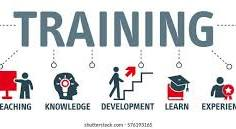

Internship

Embark on a journey of growth and learning with HashedBit Innovation Internship Program. Our program offers a unique opportunity for driven individuals to gain hands-on experience and valuable skills in Web Devlopment. As an intern at Our Company, you'll be immersed in real-world projects, working alongside industry experts who are dedicated to your professional development. From day one, you'll have the chance to make meaningful contributions, expand your network, and refine your talents in a supportive and dynamic environment. Whether you're exploring career paths, honing your skills, or seeking practical experience, our internship program is designed to empower you to reach your full potential. Join us and unlock doors to endless opportunities for growth and success. Apply now and kickstart your journey with HahedBit Innovation.
Services
Sure, here's a generic description for services: Welcome to HashedBit Innovation, where excellence meets efficiency in our range of top-tier services tailored to meet your needs. With a commitment to excellence, we offer a comprehensive suite of services designed to elevate your experience and drive success. Whether you're seeking professional consulting, innovative solutions, or reliable support, we have the expertise and dedication to deliver results. Our team of skilled professionals is equipped with the latest tools and knowledge to address your unique challenges and seize opportunities in today's dynamic market. From consultation to implementation, we're here every step of the way to ensure your satisfaction and success. Experience the difference with HashedBit Innovation - where service meets excellence.
Traning
Welcome to HashedBit Innovation Training - where knowledge meets action and potential transforms into proficiency. Our training programs are meticulously crafted to equip individuals and teams with the essential skills and expertise needed to excel in today's fast-paced world. Whether you're a newcomer looking to enter the industry or a seasoned professional aiming to stay ahead of the curve, our comprehensive courses cater to all levels of experience and expertise. At HashedBit Innovation, we believe in the power of continuous learning and development. That's why our training programs are designed to be flexible, scalable, and customized to fit your schedule and objectives. Whether you prefer in-person workshops, virtual sessions, or self-paced online courses, we have the resources and expertise to accommodate your preferences. Invest in your future with HashedBit Innovation Training and unlock your full potential. Join us on a journey of growth, discovery, and success. Enroll now and take the first step toward a brighter tomorrow.